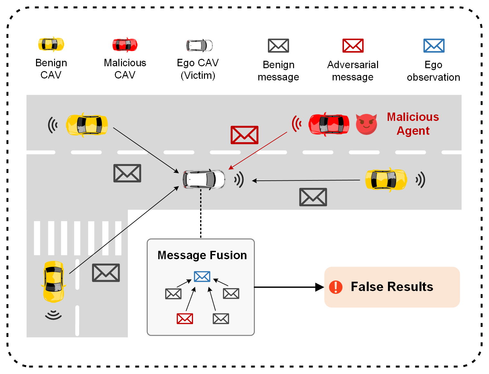
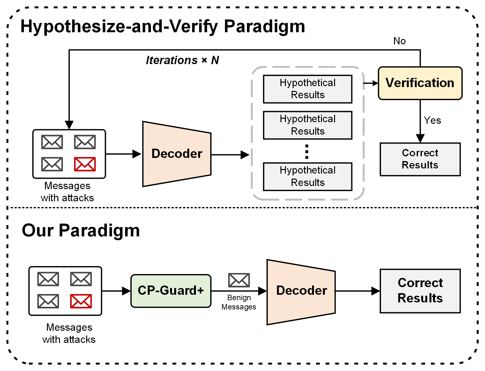
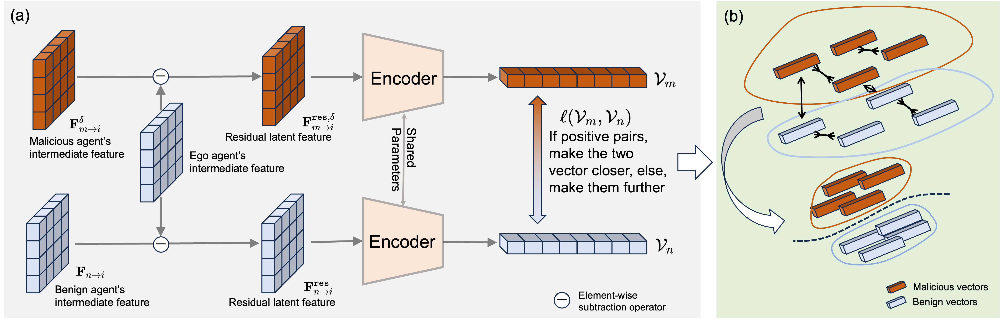
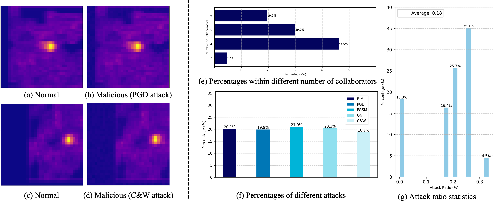
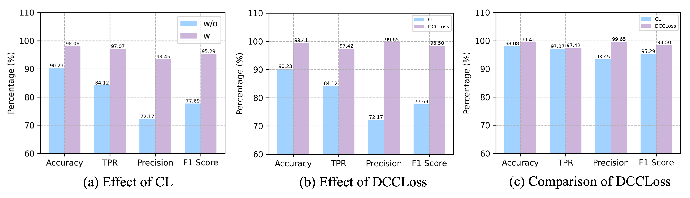
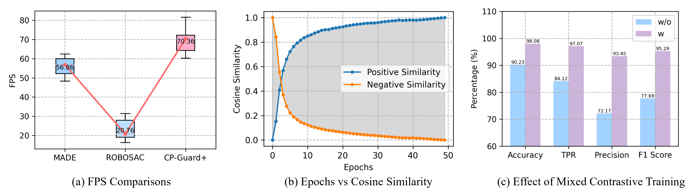

(a) Illustration of the threats of malicious agent in collaborative perception. Malicious CAVs could send intricately crafted adversarial messages to an ego CAV, which will mislead it to generate false positive perception outputs.

(b) Comparison between the proposed CP-Guard+ with the traditional hypothesize-and-verify malicious agent detection methods. CP-Guard+ directly outputs robust CP results with intermediate feature-level detection, significantly reducing computational overhead.
CP-GuardBench Dataset: The first comprehensive dataset specifically designed for training and evaluating malicious agent detection methods in collaborative perception systems, containing diverse attack scenarios and perturbation levels.

Figure: Continuous training process for CP-Guard+ with mixed contrastive learning strategy.
Mixed Contrastive Training: A carefully designed training strategy that enhances the margin between benign and malicious feature representations, enabling robust detection of adversarial agents.
Feature-Level Detection: Direct identification of malicious agents at the feature level before final perception results are computed, achieving superior detection accuracy with minimal computational overhead.
CP-GuardBench Performance: At perturbation budget Δ = 0.25, CP-Guard+ achieves over 98% accuracy for PGD, BIM, and C&W attacks. FGSM and GN attacks show accuracy around 91.64% and 90.95% respectively. With Δ = 0.5, the model maintains an average accuracy of 98.08%.
Generalization Study: Using leave-one-out evaluation, CP-Guard+ demonstrates strong generalization to unseen attacks with an average accuracy of 98.23% across all attack types.
Comparison with Baselines: On V2X-Sim dataset, CP-Guard+ outperforms MADE and ROBOSAC by significant margins. For Δ=0.25 and 1 malicious agent, CP-Guard+ achieves 71.88% AP@0.5 and 69.92% AP@0.7, outperforming the no-defense case by over 186% and 196% respectively.
Computational Efficiency: CP-Guard+ achieves 70.36 FPS, representing a 23.74% improvement over MADE and 238.92% improvement over ROBOSAC.
| Attack Type | Accuracy (%) | TPR (%) | FPR (%) | F1 Score (%) |
|---|---|---|---|---|
| PGD (Δ=0.25) | 98.92 | 99.15 | 0.31 | 98.53 |
| BIM (Δ=0.25) | 98.76 | 98.94 | 0.44 | 98.65 |
| C&W (Δ=0.25) | 98.83 | 99.02 | 0.37 | 98.73 |
| FGSM (Δ=0.25) | 91.64 | 87.32 | 4.04 | 90.11 |
| GN (Δ=0.25) | 90.95 | 85.67 | 3.77 | 89.84 |
| Held-out Attack | Accuracy (%) | TPR (%) | FPR (%) | F1 Score (%) |
|---|---|---|---|---|
| PGD | 99.93 | 100.00 | 0.09 | 99.83 |
| BIM | 99.52 | 100.00 | 0.60 | 98.82 |
| C&W | 99.86 | 100.00 | 0.17 | 99.66 |
| FGSM | 95.82 | 79.66 | 0.09 | 88.51 |
| GN | 96.02 | 81.02 | 0.17 | 89.18 |
| Average | 98.23 | 92.94 | 0.22 | 95.20 |
| Method | AP@0.5 (%) | AP@0.7 (%) | Improvement over No Defense |
|---|---|---|---|
| No Defense | 25.13 | 23.64 | - |
| MADE | 65.42 | 62.81 | +160.3% / +165.7% |
| ROBOSAC | 58.91 | 56.23 | +134.4% / +137.9% |
| CP-Guard+ | 71.88 | 69.92 | +186.0% / +196.0% |

Figure: CP-GuardBench dataset statistics showing distribution of attack types and perturbation levels.

Figure: Ablation study results showing the effectiveness of DCCLoss and mixed contrastive training strategy.

Figure: Computational efficiency comparison showing FPS performance across different defense methods.